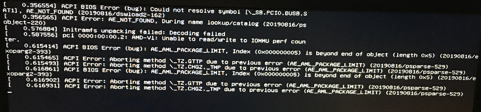

笔记本安装 Linux 遇到的 ACPI BIOS Error 分析
刷机过程
回家之前把因 ACPI BIOS Error 装不上 Linux, 雪藏半年的 Bleeding Edge HP AMD 笔记本拿了出来, 经过更新 BIOS(实际上是 UEFI), 换内核等操作终于把 Ubuntu 装上了. 本文记录了这次刷机过程和 ACPI 的一些背景知识.
如果你想在新出的笔记本装 Linux, 那么
- 首先到 linux-hardware 这个网站, 看有没有成功按照上 Linux 的案例.
- 更新 BIOS/UEFI, 更新内核.
- 如果还不行, 就只能坐等更新.
刷机经历
- 我买这笔记本是为了装 Kali, 失败之后, 和 Manjaro, Arch, Fedora 一块在这半年前后一共装了两遍也还是无法启动系统.
- ParrotOS 提供
acpi = off [^1]的 Grub 选项, 但调节不了亮度, 关不了机.
- 最后才装 Ubuntu, 是因为我的主力机已经是 Ubuntu. 装上之后, ACPI 正常, 显卡和触摸板仍有问题.
- 更新到最新内核 5.10, 必须是带签名版本, 否则不能启动. 我最后装的是 5.10.0-1008-oem. 5.10 要求开启 secure boot, 先在 UEFI/BIOS 上关了 secure boot 装系统, 装完后用旧的内核运行系统, 装 5.10, 然后重进 UEFI, 开启 secure boot. 系统完美运行. 看系统启动日志 ACPI 已经启动.
[ OK ] Created slice system-systemd\x2dbacklight.slice.
Starting Load/Save Screen Backlight Brightness of backlight:acpi_video0...
[ OK ] Finished Load/Save Screen Backlight Brightness of backlight:acpi_video0.
...
[ OK ] Started ACPI Events Check.
...
[ OK ] Listening on ACPID Listen Socket.
...
[ OK ] Started ACPI event daemon.
以下是我提交到 linux-hardware 的记录.
- https://linux-hardware.org/?probe=4149fbf824
- https://linux-hardware.org/?probe=230e0b5182
- https://linux-hardware.org/?probe=1e5e57866d
ACPI 的细节
我以前由于工作原因了解过 BIOS, GRUB, 所以自以为能够解释 ACPI. 但写的时候发现我的理解和认识有许多漏洞. 虽然我全力追踪各个细节的因果关系, 历史背景, 但由于缺少实验, 文档也不好理解, 难免有纰漏, 以后有机会再继续更新. 关于 BIOS/UEFI 可以看这本书 Hands-on Booting Learn the Boot Process of Linux, Windows, and Unix by Yogesh Babar, ACPI 看官方文档[^7]
- ACPI(Advanced Configuration and Power Interface) 是用来控制电源设备的一个公开标准[^8], 在固件(BIOS 或 UEFI) 和操作系统之间定义一层抽象. 固件提供功能实现, ACPI 充当中间层, 提供操作系统上的运行时服务, 这样一来操作系统就不需要知道具体的固件指令.
- ACPI 还避免了直接的物理控制. 传统模式中, 你按电源按钮关机就会马上断电(我没试过), ACPI 模式中则是给 CPU 发出中断, CPU 准备好之后向 ACPI 发出关机指令.
- ACPI 提供 2 种数据类型[^8], data table 和 definition blocks. Data table 供设备驱动使用的原始数据(raw data). ACPI Machine Language(AML) 解析器将用 AML 写的 definition blocks 解析成 Objects, objects 是设备的控制方法. ACPI 命名空间是一个 OS 层面的 Objects 集合. 可以定义 APCI 是一个函数 $[ACPINS \to Objects]$
- ACPI 和操作系统启动过程
- 固件更新 ACPI tables
- 首先更新 XSDT: 指定了其他 ACPI tables 的地址
- FADT: 指向 DSDT, 后者指向 definition blocks
- 固件将控制交给 bootloader, 随后操作系统启动, 通过 DSDT 创建 ACPI 命名空间.
- 操作系统遍历 ACPI 命名空间, 加载命名空间里面的设备的驱动.
- 例子: 控制温度
- 操作系统在 ACPI 命名空间找到 thermal zone, 加载 thermal zone handler .
- 温度达到某个目标点的时候, 硬件产生一个 GPE(general purpose event).
- 操作系统收到这个事件, 调用 thermal zone handler, 后者在 ACPI 命名空间寻找 object. 找到之后, 让 ACPI 执行在这个 object, 控制电量.
- Thermal zone handler 处理其他事务, 比如开启风扇, 降低设备性能.
- 关于为何 Linux 出现 ACPI 错误, Askubuntu 有个阴谋论色彩的回答[^3], 说有些主板的 ACPI 是 Windows 用的, Linux 要破解每个主板的 ACPI 才能使用. ACPI in Linux – Myths vs. Reality 称不兼容的一个常见原因是 Windows 使用 real-time clock 而 Linux 用 programmable interrupt timer. 我更新了 UEFI, 但半年中, Ubuntu 是否更新了内核, 我不确认, 所以不确定关键因素是什么.
- 根据我们对 ACPI 的了解, 再看报错信息

- 猜想: 是一个越界问题, AML 解释器 definition blocks 解析出来的 object 只有 5 个, Index 0x05 访问越界(AE_AML_PACKAGE_LIMIT). 因为这个问题, 导致 definition blocks 转换 ACPI Namespace 的过程失败. 里面的 method(control method object) 无法转换成对应项,
\_TZ.GTTP, \_TZ.CHGZ._TMP 等等 .
- Secure Boot 的作用是防止恶意软件^2, 微软首先实践了这个理念, 凡是 UEFI 启动的程序(bootloader, 比如 GRUB), 都必须经过签名验证. 标准规定 UEFI 应提供禁用 Secure Boot 的选项. 如果没有禁用验证的选项, 则 Linux 需要用微软的密钥签名. 最后 Linux 社区和微软达成协议, Linux 可以用微软的密钥, 同时 Linux 也想出 multi state bootloader 的策略, 将一个极少更新的 bootloader(shim.efi) 签名, 用来启动常规 bootloader(grubx64.efi).
[^4]: Linux typically uses the 8254 Programmable Interrupt Timer (PIT) for clock ticks. This timer is typically routed to IRQ0 via either IO-APIC pin0 or pin2. But Windows doesn’t always use the PIT; it uses the RTC on IRQ8. So a system vendor that validates their system only with Windows and never even boots Linux before releasing their hardware may not notice that the 8254 PIT used by Linux is not hooked up properly.
[^1]: 事实上还有其他参数可以调整
[^6]: ACPI IN LINUX
[^3]: https://askubuntu.com/a/1097335
[^7]: https://www.acpica.org/documentation
[^8]: https://acpica.org/sites/acpica/files/ACPI-Introduction.pdf
[^9]: Myth: The Linux community has no influence on the ACPI Specification.